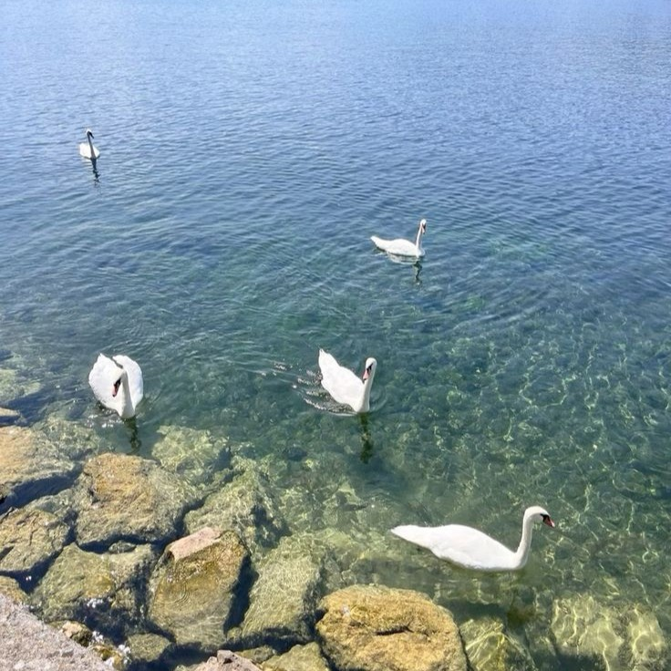
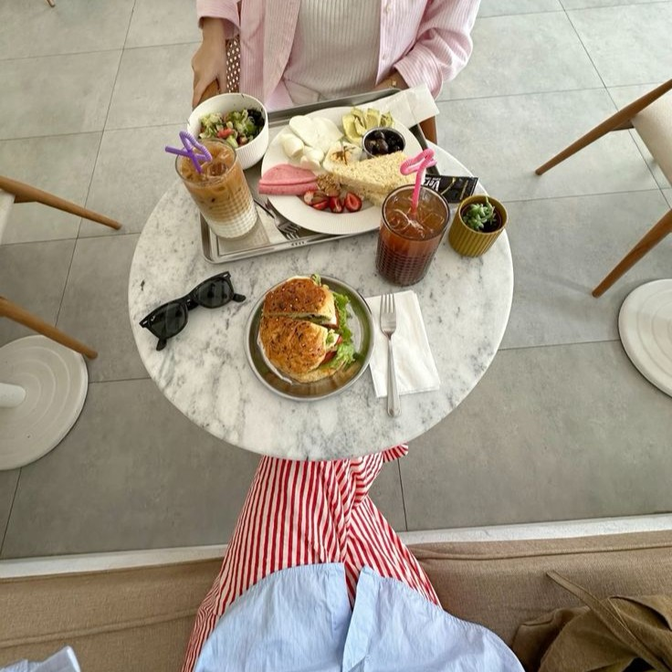
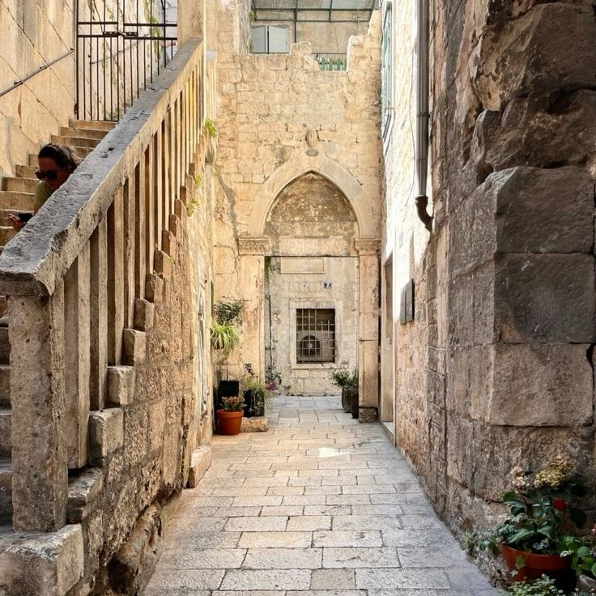

<!DOCTYPE html>
<html>

<head>
    <title>meryem.earth</title>
    <link rel="shortcut icon" href="">
    <link rel="alternate" type="application/rss+xml" href="{RSS}">
    <meta charset="utf-8">
    <meta name="viewport" content="width=device-width, initial-scale=1.0">
    <link href="/style.css" rel="stylesheet" type="text/css">
    <link href="/responsiveness.css" rel="stylesheet" type="text/css">
    <meta name="author" content="Meryem Sezgin" />
    <meta name="description" content="" />

    <script src="//ajax.googleapis.com/ajax/libs/jquery/3.4.1/jquery.min.js"></script>
    <script>
        $(document).ready(function () {
            $(function () {
                $('body').removeClass('load-in');
            });
        });
    </script>
</head>

<body class="load-in">

    <header id="mobile-header">
        <div id="mobile-flex">
            <div id="mobile-left">
                <div class="menu-button" title="open menu"><svg xmlns="https://www.w3.org/2000/svg" width="24"
                        height="24" viewBox="0 0 24 24" fill="none" stroke="currentColor" stroke-width="2"
                        stroke-linecap="round" stroke-linejoin="round" class="feather feather-menu">
                        <line x1="3" y1="12" x2="21" y2="12"></line>
                        <line x1="3" y1="6" x2="21" y2="6"></line>
                        <line x1="3" y1="18" x2="21" y2="18"></line>
                    </svg></div>
            </div>
        </div>
    </header>

    <aside id="sidebar">
        <div id="side-content">
            <div class="close"><a title="close menu"><svg xmlns="https://www.w3.org/2000/svg" width="48" height="48"
                        viewBox="0 0 24 24" fill="none" stroke="currentColor" stroke-width="2" stroke-linecap="round"
                        stroke-linejoin="round" class="feather feather-x">
                        <line x1="18" y1="6" x2="6" y2="18"></line>
                        <line x1="6" y1="6" x2="18" y2="18"></line>
                    </svg></a></div>

            <div id="side-icon">
                

                <div class="title"><a href="/index" class="gradient-text">meryem.earth</a></div>
                <div class="sub-ital">17, turkish, bay area</div>

                <hr style="border: 1px dotted #48383A80; width: 110%;">

                <nav class="upper" id="side-nav">
                    <ul class="menu-list">
                        <li><a href="/about">
                                <span class="nav-text">about</span>
                            </a></li>

                        <li>
                            <a class="nav-text">cookie tin</a>
                            <ul class="dropdown">
                                <li><a href="/music">
                                        <span class="dp-text">○ music</span>
                                    </a></li>
                                <li><a href="/library">
                                        <span class="dp-text">○ library</span>
                                    </a></li>
                                <li><a href="/literature">
                                        <span class="dp-text">○ literature</span>
                                    </a></li>
                                <li><a href="/letters">
                                        <span class="dp-text">○ letters</span>
                                    </a></li>
                            </ul>
                        </li>
                        <li>
                            <a class="nav-text">credentials</a>
                            <ul class="dropdown">
                                <li><a href="https://www.linkedin.com/in/merszgn/" target="_blank">
                                        <span class="dp-text">○ linkedin</span>
                                    </a></li>
                                <li><a href="/experiences">
                                        <span class="dp-text">○ experiences</span>
                                    </a></li>
                                <li><a href="/purpose">
                                        <span class="dp-text">○ my purpose</span>
                                    </a></li>
                            </ul>
                        </li>
                        <li>
                            <a class="nav-text">socials</a>
                            <ul class="dropdown">
                                <li><a href="https://www.instagram.com/merszgn/" target="_blank">
                                        <span class="dp-text">○ instagram</span>
                                    </a></li>
                                <li><a href="https://vsco.co/merszgn/gallery" target="_blank">
                                        <span class="dp-text">○ vsco</span>
                                    </a></li>
                                <li><a href="https://www.youtube.com/@merszgn" target="_blank">
                                        <span class="dp-text">○ youtube</span>
                                    </a></li>
                            </ul>
                        </li>
                        <li><a href="/contact">
                                <span class="nav-text">contact me</span>
                            </a></li>
                    </ul>
                </nav>
            </div>
    </aside>

    <article id="index-header"></article>

    <article>
        <h1 class="title">Who am I?</h1>
        <p>
            My name is Meryem and I'm a Turkish-Muslim university student residing in the Bay Area of California. I
            tested out of high school in my sophomore year and am now majoring in biology. I am interested in
            going to medical school to get an M.D. in anesthesiology. <a href="">"Why anesthesiology?"</a>
        </p>
        <p>I've always had an interest in web development and design. Since 2020, I have been on the internet creating
            websites and pursuing this hobby publicly. I started my first website on <a
                href="https://neocities.org/browse" target="_blank">Neocities</a>. I have had multiple anonymous
            websites on the internet since starting this
            journey. Now, I've become interested in dedicating a webpage entirely to myself and my thoughts.
        </p>
        <p>This is my own personal Earth. I consider it to be a separated part of myself which I must provide care to.
            My
            biggest goal with <span class="gradient-text">meryem.earth</span> is to show others that having their
            own "Earth" is the most important part of life. It doesn't have to be a website, necessarily, but an
            extension
            of your mind that allows you to express yourself freely; <i>something that brings you peace and joy.</i> You
            can read more about my purpose <a href="">here</a>.
        </p>
    </article>

    <article style="text-align: center;">
        <section>
            <br />
            <h3><a href="/articleone.html">Article One</a></h3>
            <hr />
            <p>
                There will be an Article One shortly... Whenever I feel like writing one.
            </p>
        </section>
        <section>
            <br />
            <h3><a href="/articletwo.html">Article Two</a></h3>
            <hr />
            <p>
                And an Article Two, as well. I have a couple more things on the checklist.
            </p>
        </section>
        <section>
            <br />
            <h3><a href="/articlethree.html">Article Three</a></h3>
            <hr />
            <p>
                An Article Three would also fit into this small polaroid section.
            </p>
        </section>
    </article>

    <article id="sect">
        <section id="leftsect">
            Empty Space.
        </section>
        <section id="rightsect">
            <h1 class="title"><a href="https://poetic-exile.github.io/" target="_blank">[POETIC-EXILE] on Github</a>
            </h1>
            <p style="font-style: normal;">
                <a href="https://poetic-exile.github.io/" target="_blank">[POETIC-EXILE]</a> is my sub-website dedicated
                to a worldcraft titled Nouranthys. I am working on obtaining a domain name for it soon, but for now it
                is fully hosted by Github Pages.
            </p>
            <p style="font-style: normal;">
                I created Nouranthys several years ago, having changed the name of it several times before settling on
                this one. It has recently been going through a mass change due to the files being deleted off of my
                drive a couple months ago in 2024.
            </p>
            <p style="font-style: normal;">
                The new Nouranthys will be straying far from homebrew campaign writing. I plan to utilize the website as
                an archive for the lore and literature relevant to Nouranthys. Due to this, the website will be
                performance-heavy and reliant on scripts to function. I recommend you turn off any script blockers
                before you venture into [POETIC-EXILE].
            </p>
            <p style="font-style: normal;">
                I appreciate all interest in my worldcrafts! If you'd like to talk to me about it, my email is always
                open for discussion!
            </p>
        </section>

    </article>

    <footer>
        © 2024 Meryem Sezgin. All Rights Reserved.
    </footer>

    <script src="https://cdnjs.cloudflare.com/ajax/libs/clipboard.js/2.0.0/clipboard.min.js"></script>
    <script>
        $(document).ready(function () {
            $('.menu-button').click(function () {
                $('#sidebar').addClass('show');
            });
            $('.close').click(function () {
                $('#sidebar').removeClass('show');
            });
        });

        const menuItems = document.querySelectorAll('.menu-list > li');
        menuItems.forEach(item => {
            item.addEventListener('click', function (e) {
                e.stopPropagation();
                this.classList.toggle('open');
            });
        });
    </script>
</body>

</html>